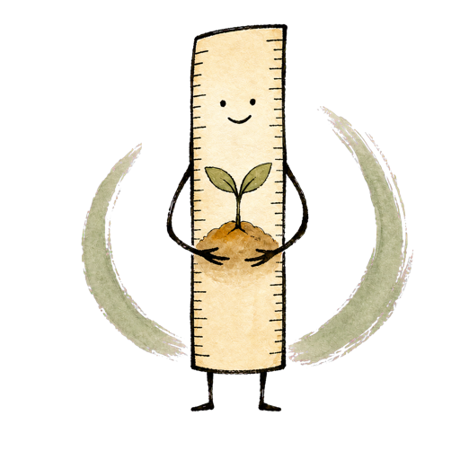

助成ものさし
あなたの時間を、もっと芸術へ。
締切・助成額・「いつ入金されるか（支給時期）」・応募条件をまとめて確認。舞台芸術・音楽・美術・映像・文芸/伝統芸能の237制度を収録（無料）。

237
収録制度
28
いま受付中
5
ジャンル
いま応募できる助成（28）
東京芸術文化創造発信助成 カテゴリーI（芸術創造・単年）
アーツカウンシル東京 ・ 東京都
東京芸術文化創造発信助成 カテゴリーII（芸術創造・長期）
アーツカウンシル東京 ・ 東京都
東京芸術文化創造発信助成 カテゴリーIII（創造環境向上）
アーツカウンシル東京 ・ 東京都
芸術文化による社会支援助成
アーツカウンシル東京 ・ 東京都
東京芸術文化鑑賞サポート助成
アーツカウンシル東京 ・ 東京都
朝日新聞文化財団 芸術活動助成金
朝日新聞文化財団 ・ 全国
EU・ジャパンフェスト Mobility Support Program
EU・ジャパンフェスト日本委員会 ・ 全国／日欧
大阪市芸術活動振興事業助成金
大阪市（審査: 大阪アーツカウンシル） ・ 大阪府大阪市
ローム ミュージック ファンデーション 音楽活動への助成
ローム ミュージック ファンデーション ・ 全国
小笠原敏晶記念財団 文化・芸術助成（現代美術・調査研究等）
小笠原敏晶記念財団 ・ 全国
美術工芸振興佐藤基金 研究助成
美術工芸振興佐藤基金 ・ 全国
京都市芸術文化特別奨励制度
京都市 ・ 京都府京都市
U35創造支援プログラム KIPPU
京都芸術センター×ロームシアター京都×京都市 ・ 京都府京都市
福岡文化財団 助成事業
公益財団法人 福岡文化財団 ・ 福岡県
福岡よかトピア国際交流財団 国際交流活動助成事業
福岡よかトピア国際交流財団（FCIF） ・ 福岡県福岡市
仙台市市民文化事業団 公演・展示活動助成事業
仙台市市民文化事業団 ・ 宮城県仙台市
アーツカウンシル金沢 助成プログラム
金沢芸術創造財団 ・ 石川県金沢市
静岡市文化振興財団 文化振興事業費助成金
静岡市文化振興財団 ・ 静岡県静岡市
鳥取県文化芸術活動支援補助金
鳥取県 ・ 鳥取県
松山市 まちなか文化活動補助金
松山市 ・ 愛媛県松山市
横須賀市 文化及び生涯学習事業助成
横須賀市生涯学習財団 ・ 神奈川県横須賀市
土屋文化振興財団 助成事業
土屋文化振興財団（松戸市） ・ 千葉県
秦野市文化振興基金活用事業助成制度
秦野市（文化スポーツ部 文化振興課） ・ 神奈川県秦野市
佐世保市クラウドファンディング型プロジェクト応援事業（文化）補助金
佐世保市（文化スポーツ部文化国際課） ・ 長崎県佐世保市
若手アーティスト等活動支援・担い手育成事業（にかほ芸術登竜門／MAKING A SHORT FILM）
秋田県文化振興課（委託運営） ・ 秋田県
田辺市ふるさと文化振興補助金
田辺市教育委員会 ・ 和歌山県田辺市
姫路市文化活動助成
姫路市文化国際交流財団 ・ 兵庫県姫路市
玉野市芸術・文化振興助成事業
玉野市（社会教育課） ・ 岡山県玉野市
これは開発中のプロトタイプです。適格性の判定は募集要項の明示条件のみに基づく機械的なもので、採択可能性を示すものではありません。